在AV1刚刚完成定稿后，Facebook公布了AV1的测试结果，测试结果显示AV1至少有30%以上的性能提升，这多少给了AV1的潜在用户一定的信心。Facebook还表示，将在内部继续推广AV1。LiveVideoStack对测试结果进行了翻译。
文 / Yu Liu
译 / 蒋默邱泽
审校 / 包研
改进视频压缩对于更敏捷、更高质量地传输视频文件非常重要，同时使用更少的带宽和存储空间。从4K流媒体传输到智能手机的视频聊天及笔记本电脑的屏幕共享一切都可以通过更强质量更小的压缩编码视频。
AOM开放媒体联盟立于2015年，由很多视频点播提供商组成，包括亚马逊，Facebook，谷歌，微软和Netflix以及网络浏览器开发商和芯片公司 - 最近刚刚发布了AV1（AOMedia Video 1.0）这是一种全新的开放式而且免费的视频格式，有望成将视频压缩效率推向新的纪元。
我们在Facebook视频中运用了最新的编码器进行测试常见的真实使用环境条件。我们去测试观察AV1的性能与实际生产系统中开源编码器情况，当然不仅仅是测试效率和标准参考中软编码（即H.264 AVC组合模型或JM）的效率。通过以这种方式构建测试模型，我们能够展示编解码如何在真正的生产环境中执行与当前广泛使用的案例（如x264和libvpx-vp9）抗衡。
我们的测试表明AV1超越了预计其规定的压缩率比VP9好30％，参照x264 main profile，x264 high profile和libvpx-vp9相比，分别获得了50.3％，46.2％和34.0％的提升。由于AV1增加了复杂性，新的编码要比现有vp9和x264实际方案中还需要较长时间来验证替换它。
我们的测试主要是使用标准清（SD）和高清（HD）视频文件，因为这些是目前Facebook上最流行的视频格式。但是由于AV1的质量随着视频分辨率的提高而提升，我们得出结论：新的压缩编码可能在UHD、 4K和8K内容的情况下提升更高的效率。
随着2018年3月28日正式公开发布AV1，这些结果应该能够增强这项技术在实际应用中提升压缩率的信心。
随后我们的测试过程和结果的细节将有助于工程师详细评估AV1压缩性能。
测试方法和评估设置
我们的实验并没有使用无损压缩的测试视频序列而是常见测试序列或https://media.xiph.org/video/derf/中的公开测试序列，其中选择了400个来自Facebook的首页公开视频这些视频具有以下特点：
大部分视频都由智能手机录制
在上传到Facebook服务器前，它们先在终端进行了压缩
大多数是SD或HD，而不是UHD、4K或8K
由于标准明确了测试内容是从视频标准条件下进行测试的，在未压缩和UHD测试序列是需要最新的视频标准质量评价与我们这次评测相关性不大。我们要将已经压缩的测试内容先进行解压缩然后再被将所有测试编码器重新压缩。 只有这种方法使我们能够衡量AV1在真实世界的生产环境中的表现。
为了测量这些视频的质量，内容分析按照ITU-T P.910 主观视频质量评估方法进行。由于压缩量化与视频的空间和时间息息相关，所以这种内容分析对于显示在各种可用视频中发现的相对空间信息和时间信息是必要的。
由于视频内的场景变化，除了ITU-T P.910建议的标准偏差的最大值外，还计算了空间和时间信息的中值公式如下：
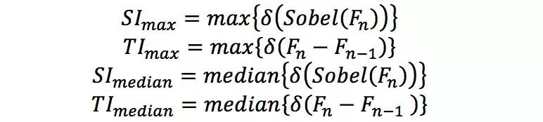
图1显示了所有400个FB热度视频（前10秒）的空间和时间信息的散点图。这些图表显示了广泛的内容覆盖范围，包括慢/快动作和低/高空间复杂度。
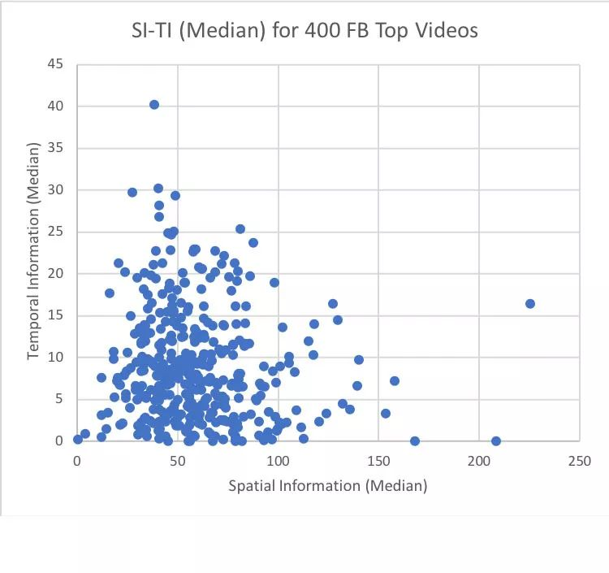
图1a--400个FB热度视频的空间和时间信息散点图（最大值）
图1b--400个FB热度视频的空间和时间信息散点图（中值）
编码器实施
对于AV1编码，我们使用了AOM AV1参考的快照版本。对于H.264 AVC和VP9编码，我们使用了FFmpeg版本3.3.3以及相应的libx264和libvpx-vp9库版本。表1列出了我们测试设置中使用的编码器版本。
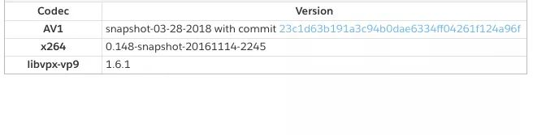
上表1.测试设置中使用的视频编码版本
AV1
此快照版本是从AOM AV1版本库取出时，AV1在2018年3月28日正式发布，因为这快照版本AV1的编码性能是目前最稳定的。目前AV1重任是提升速度优化使其在现实生产环境中产生效果。
X264
X264是用于H.264 AVC中公认的视频编码器并提供质量最好性能压缩，X264与MSU测试报告中（第六代MPEG-4 AVC / H.264编码器比较）相比其编码效果、压缩率和特性都提高了24％；x264被广泛用于许多网络视频服务核心，包括Facebook还有电视广播公司和互联网服务提供商。
libvpx-VP9
免费视频编码器libvpx库由Google开发，可用作视频编码格式VP8和VP9来参照。随着1.5和1.6的版本发布，使得libvpx-vp9可以在生产系统中为编码和解码提供了显着的提速。
编码配置
为了以内容自适应的方式确定比特率，首先使用具有6个CRF / QP值的恒定速率因子（CRF）或量化参数（QP）模型对每个视频进行编码; 同时在CRF / QP编码阶段的输出码率会被输出自适应（ABR）2-pass进行编码。为了匹配编码器中的质量/码率范围，使用了以下CRF / QP值：
x264 CRF = {19, 23, 27, 31, 35, 39}, VP9/AV1 CRF/QP = {27, 33, 39, 45, 51, 57}
CRF / QP和ABR ffmpeg配置如下：
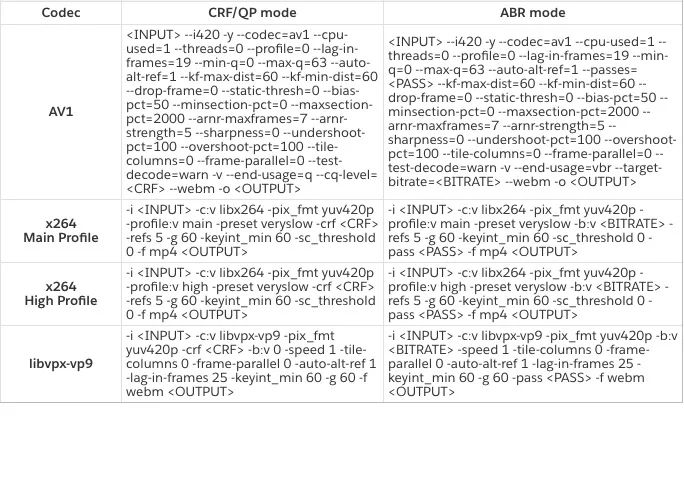
我们的设置选择了Facebook视频点播（VOD）应用程序中使用的最常见的x264和libvpx-vp9编码设置。由于x264的main profile和high profile都用于Facebook视频编码，因此会分别报告。AV1会尝试匹配x264和libvpx-vp9的编码设置。注意：为了与其他编解码器的设置相匹配接近，我们的测试对AV1使用了“--kf-max-dist = 60 --kf-min-dist = 60”，而不是Google的WebM团队最初推荐的参数（“ -kf-max-dist = 150 -kf-min-dist = 0“）。
实验结果
压缩效率是通过Bjontegaard-Delta rate（BD-rate）度量来测量的，该度量计算相同失真速率 - 失真（RD）曲线之间的平均码率差异，例如：对于相同的峰值信噪比（PSNR）或结构相似性（SSIM）。请注意！BD-rate负数值表示实际的码率节省率。如上所述我们测试使用400个FB视频，以30fps-16：9宽高比-1：1像素长宽比和8 bit位深的不同分辨率（360p / 480p / 720p / 1080p）从每个视频中提取前10秒进行编码测试。
CRF / QP的实验结果
图2和图3显示了针对x264 main，x264 high和libvpx-vp9的CRF / QP模式下的AV1 BD速率节省。 就PSNR而言：AV1相对于x264 main，x264 high和libvpx-vp9的平均BD节省率分别为50.0％，45.8％和32.9％。 就SSIM而言：AV1相对于x264 main，x264 high和libvpx-vp9的平均BD节省率分别为49.8％，45.7％和40.5％。
另一方面对于CRF / QP模型，AV1与x264 main，x264 high和libvpx-vp9对比的编码计算复杂度（编码运行时间而言）分别增加5721.5倍，5869.9倍和658.5倍 如图4所示。
为了总结CRF / QP模型下所有测试编码的BD-rate性能，表3提供了关于PSNR和SSIM方面的交叉编解码器对比的概述。
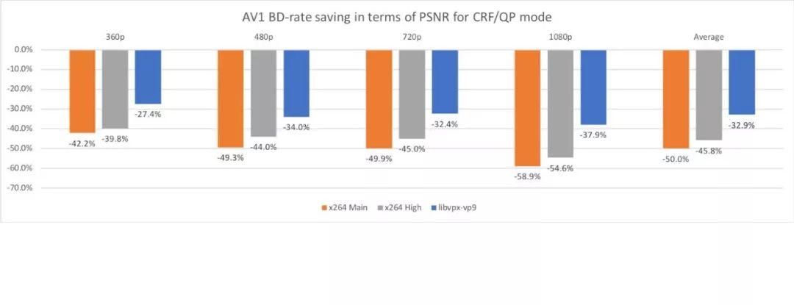
图2.针对x264 main，x264 high和libvpx-vp9的CRF / QP模型的PSNR以AV1 BD码率节省
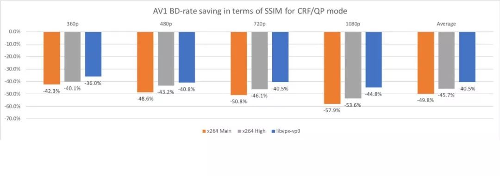
图3.针对x264 main，x264 high和libvpx-vp9的CRF / QP模型的SSIM方面的AV1 BD码率节省
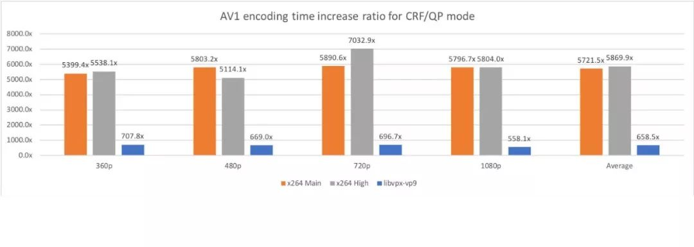
图4.针对x264 main，x264 high和libvpx-vp9的CRF / QP模式的AV1编码时间复杂率
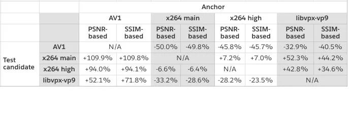
表3.所有CRF / QP模型的测试编码在PSNR和SSIM方面的BD-rate性能汇总
ABR的实验结果
图5和图6显示了针对x264 main、x264 high和libvpx-vp9的ABR模式的AV1 BD-rate节省。 就PSNR而言AV1相对于x264 main，x264 high和libvpx-vp9的平均BD性能节省分别为51.0％，47.0％和29.9％。 就SSIM而言AV1相对于x264 main，x264 high和libvpx-vp9的平均BD性能节省分别为50.3％，46.3％和32.5％。
然而在ABR模式下的x264 main，x264 high和libvpx-vp9相比，AV1的编码计算复杂度有所增加。编码运行时间提升分别为9226.4倍，8139.2倍和667.1倍，如图7所示。
为了总结ABR模式下所有测试编码器的BD-rate性能，下面表4提供了关于PSNR和SSIM方面的交叉编解码器对比概述。
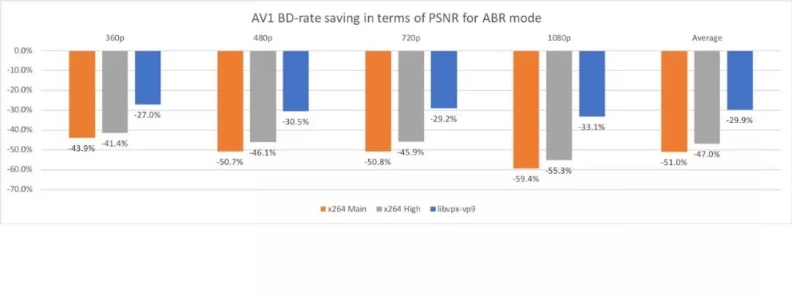
图5.根据ABR模式的PSNR情况下x264 main，x264 high和libvpx-vp9的AV1 BD节省率
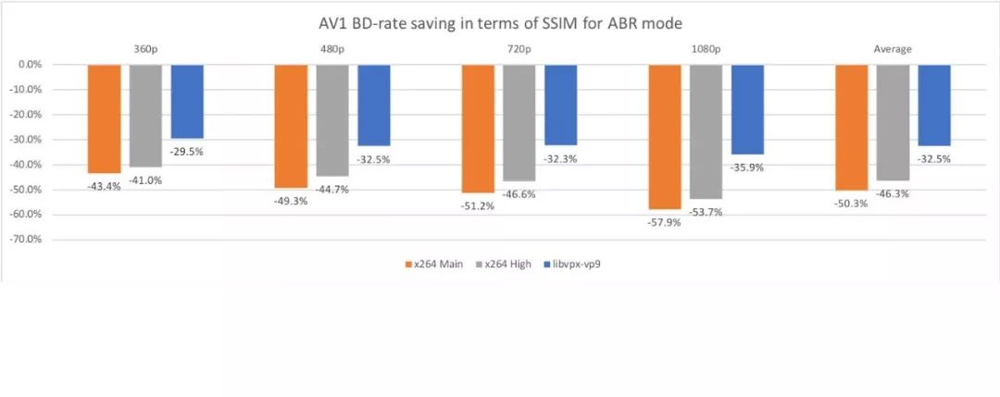
图6.针对ABR模式的SSIM情况下x264 main，x264 high和libvpx-vp9的AV1 BD节省率
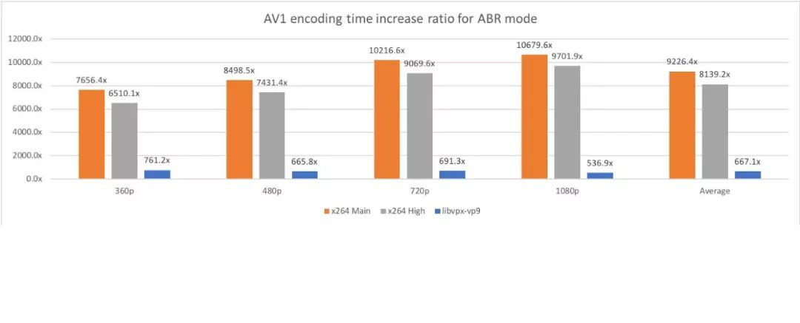
图7.针对x264 main，x264 high和libvpx-vp9的ABR模式的AV1编码时间复杂度
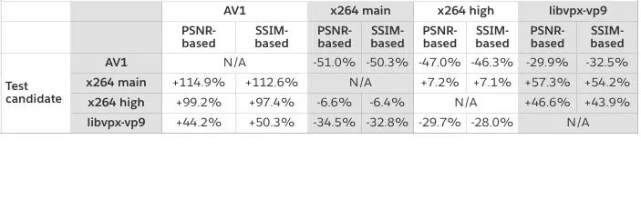
表4.所有ABR模式测试编码在PSNR和SSIM方面的BD-rate性能汇总
最后
这些结果应该让工程师们对AV1如何在生产系统中执行并加速AV1的采用充满信心。 根据我们的调查结果发现更多软件开发人员很期待用上AV1他们知道在现实条件下效率能够优于原有生产环境。
Facebook将继续在我们的生产系统中推广AV1。将来Chrome和Firefox等主流网页浏览器正式支持AV1我们必将为流行的Facebook视频在网络上提供AV1编码内容。同VP9或H.264 AVC内容相比，观看AV1内容的用户可以以相同的码率享受更好的质量，并以相同的画面质量减少30％至50％的缓冲等待。
WebRTCon 2018
继2017年第一届LiveVideoStackCon音视频技术大会之后，LiveVideoStack又一次出发——WebRTCon 2018，将于5月在上海举行，这是一次对过去几年WebRTC技术实践与应用落地的总结。
WebRTCon 2018设立了主题演讲，WebRTC与前端，行业应用专场，测试监控和服务保障，娱乐多媒体开发应用实践，WebRTC深度开发，解决方案专场，WebRTC服务端开发，新技术跨界，WebRTC与Codec等多个专场。邀请30余位全球领先的WebRTC技术专家，为参会者带来全球同步的技术实践与趋势解读。扫描下图二维码了解详情。